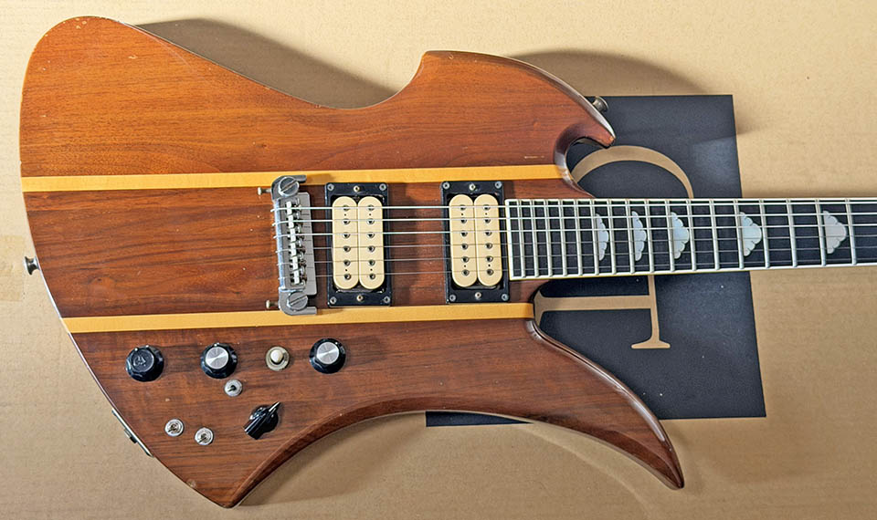
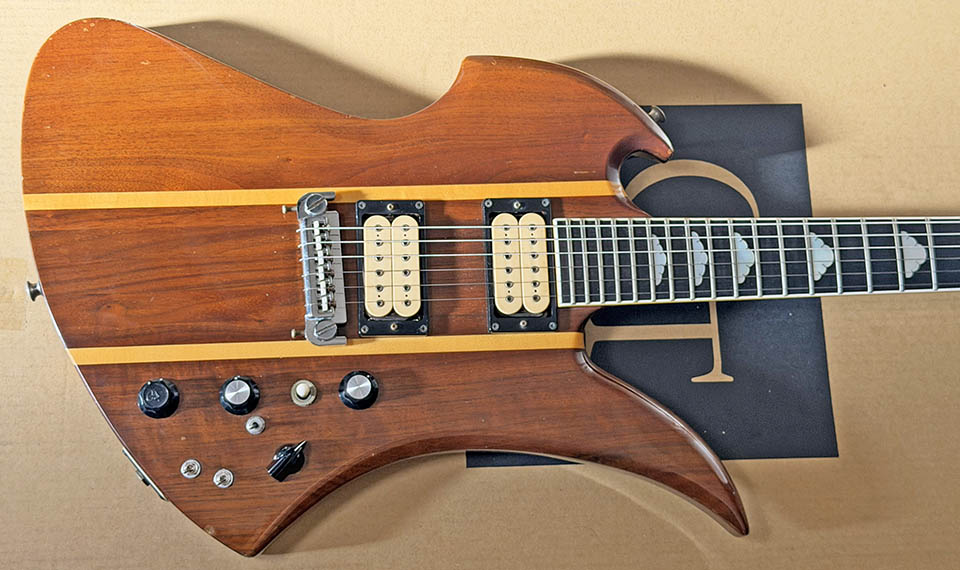
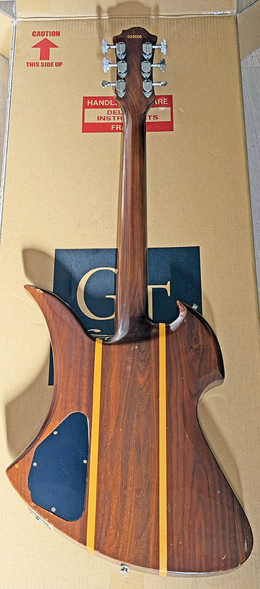
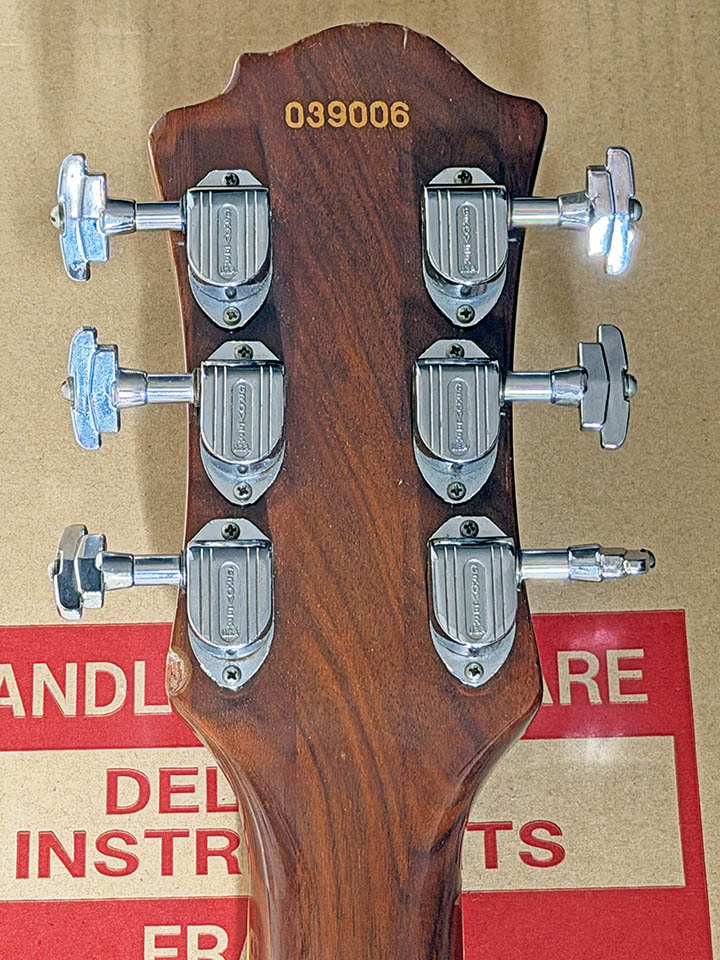
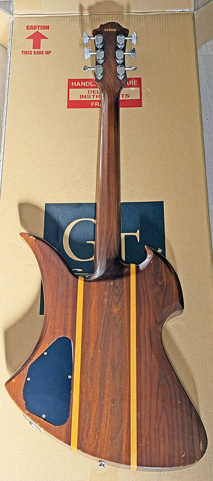
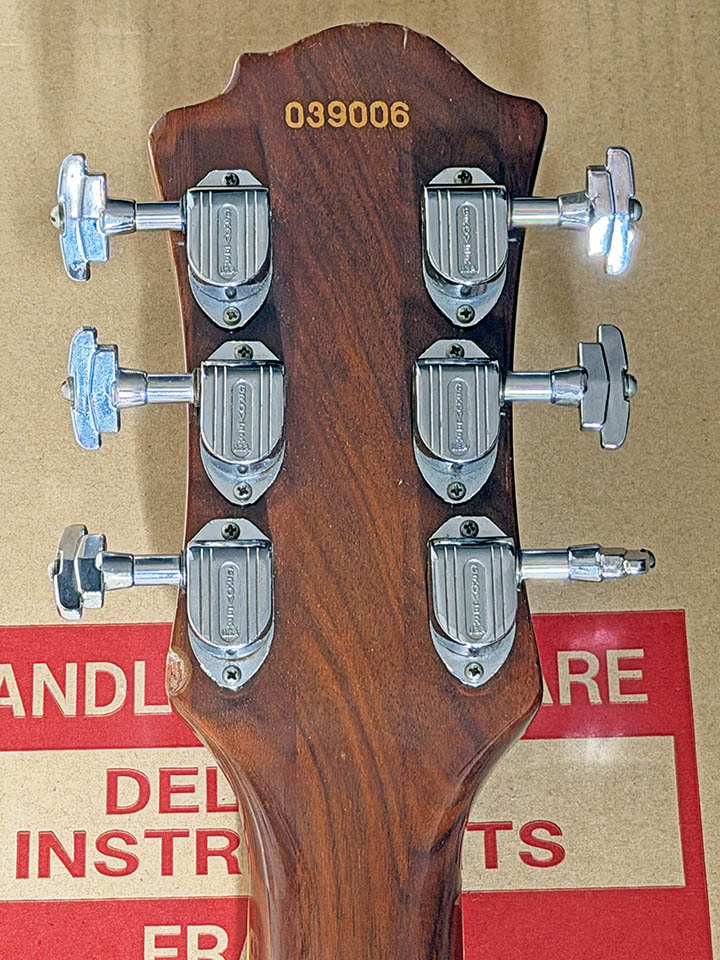

{kind=link}

 



{kind=link}
{kind=link}


父のメインギターである My Father's Aria Pro II MK-1800WA - Natural が、僕が初めて目にしたギターであり、思い入れのあるシェイプである。2012年に同型機の Aria Pro II MK-1800WA - Natural (売却済) を購入したところ、父の個体とシリアルナンバーがなんと5番違いという兄弟機だった。全く不満はなかったのだが、当時結婚していたこともあり2017年に機材整理のため売却してしまった。
またいつか状態の良い個体に出会えたら購入したいなーと思っていて何となくウォッチしていたところ、今回の個体を発見。2025-12-14 Guitar Traders 様より購入、2025-12-17 到着。
コチラは父の個体、および以前所有していた個体である MK-1800WA とは異なる、MK-1500WA というモデルだ。両者の違いは搭載ピックアップで、MK-1800WA は Dimarzio Dual Sound、MK-1500WA は Aria Extra-III (アリア純正) というピックアップが載っている。ピックアップの6弦の外側に小さな穴が開いていると Dimarzio ピックアップ・穴がなければ Aria ピックアップ、という外見上での区別もつき、本個体が MK-1500WA という判断で矛盾しない。他に細かい違いというとコチラの MK-1500WA にはトラスロッドカバーに「AriaProII」の表記がなかったのだが、コレがモデルによる違いなのか本個体だけ交換されたりしているのかは不明。MK-1800WA と MK-1500WA の違いはピックアップだけとされているので、ボディはウォルナットとメイプルのスルーネック、指板はエボニーで多彩なスイッチ類も同等機能である。
本個体のシリアルは 039006。シリアル1桁目が西暦の下1桁 (0 始まりなので1980年製) な模様。004006・004011・039006 という3本が恐らくは同じ1980年製であることを考えると、2・3桁目の「04」や「39」にも意味がありそうだが、ネット上で見つかる情報とも合致せず、詳しいことは不明…。
さて、今回の個体で多彩なコントロール類を改めて確認してみる。
画像8枚目のキャビティ内の写真でも確認できるが、黒いカバーに覆われているのが 9V 電池。ブースター回路には 9V 電池を必要とする、というのは今回初めて気付いた仕様だった…。以前持っていた個体は Dimarzio Dual Sound ピックアップの特性だったのか、高音域の抜けが悪く、どうセッティングしてもこもった音色だと思っていたのだが、本個体の Aria Extra-III ピックアップは高音域もしっかり出て、かなり使いやすい。デュアルサウンドスイッチによるコイルタップも自然なシングルコイルサウンドで、バッキングでのコード弾きなどに向いていそうだ。
ボディ木部の色味が、父の所有機や以前持っていた個体と比べると本個体は少し明るいかな、という気がするが、ネットで他の個体を色々見ると、型番の違いというよりは個体ごとの経年変化によるものと思われる。いわゆる日焼け・退色が起きている度合いということだ。
↑ 本個体のサウンドバリエーションを確認する動画を作ってみた。